Calibrating trade-offs tutorial
Source:vignettes/calibrating_trade-offs_tutorial.Rmd
calibrating_trade-offs_tutorial.RmdIntroduction
Systematic conservation planning requires making trade-offs between objectives (Margules & Pressey 2000; Vane-Wright et al. 1991). Since different objectives may conflict with one another – or not align perfectly – prioritizations need to make trade-offs between different objectives (Klein et al. 2013). Although some objectives can easily be accounted for by using locked constraints or representation targets (e.g., Dorji et al. 2020; Hermoso et al. 2018), this is not always the case (e.g., Beger et al. 2010). For example, prioritizations often need to balance overall cost with the overall level spatial fragmentation among priority areas (Hermoso et al. 2011; Stewart & Possingham 2005). Additionally, prioritizations often need to balance the overall level of connectivity among priority areas against other objectives (Hermoso et al. 2012). Since the best trade-off depends on a range of factors – such as available budgets, species’ connectivity requirements, and management capacity – finding the best compromise can be challenging.
The prioritizr R package provides multi-objective
optimization approaches to help identify desirable compromises between
different objectives. To achieve this, one option involves formulating a
conservation planning problem (via problem()) with a
primary objective (e.g., add_min_set_objective() to
minimize cost) and penalties specify to supplementary objectives (e.g.,
add_boundary_penalties() to minimize spatial
fragmentation). Another option involves formulating a multi-objective
conservation planning problem (via multi_problem()) with
multiple objectives, (optionally) supplementary penalties, and a
particular multi-objective objective optimization approach (e.g.,
add_hier_approach() for hierarchical optimization). When
formulating a problem, the nature of these trade-offs can be specified
using parameters (e.g., penalty parameter for
add_boundary_penalties() function, or rel_tol
parameter for add_hier_approach() ). To identify a
prioritization that represents a desirable compromise among multiple
objectives, a calibration analysis can be performed to generate a set of
candidate prioritizations based on different parameters or
multi-objective optimization approaches, measure their performance
according to each of the objectives, and then select a prioritization
based on how well it achieves the objectives (Hermoso et al. 2011; Stewart & Possingham
2005; Hermoso et al. 2012).
The aim of this tutorial is to provide guidance on calibrating trade-offs when using the prioritizr R package. Here we will explore a several different approaches for generating prioritizations and finding a desirable compromise between different objectives. Specifically, we will try to generate prioritizations that strike the best balance between total cost of priority areas and spatial fragmentation (measured as the total boundary length of prioritization). Although the code presented in this vignette is directly applicable to performing a boundary length calibration analysis (similar to Ardron et al. 2010), it can also be adapted for other penalty and objective functions (e.g., exploring trade-offs between cost and species’ representation).
Data
Let’s load the packages and dataset used in this tutorial. Since this
tutorial uses the prioritizrdata R package along with several
other R packages (see below), please ensure that they are all
installed. This particular dataset comprises two objects:
tas_pu and tas_features. Although we will
briefly describe this dataset below, please refer
?prioritizrdata::tas_data for further details.
# load packages
library(prioritizrdata)
library(prioritizr)
library(sf)
library(terra)
library(dplyr)
library(tibble)
library(ggplot2)
library(topsis)
library(withr)
library(stringr)
library(ggrepel)
# set seed for reproducibility
set.seed(500)
# load planning unit data
tas_pu <- get_tas_pu()
print(tas_pu)## Simple feature collection with 1130 features and 4 fields
## Geometry type: MULTIPOLYGON
## Dimension: XY
## Bounding box: xmin: 298809.6 ymin: 5167775 xmax: 613818.8 ymax: 5502544
## Projected CRS: WGS 84 / UTM zone 55S
## # A tibble: 1,130 × 5
## id cost locked_in locked_out geom
## <int> <dbl> <lgl> <lgl> <MULTIPOLYGON [m]>
## 1 1 60.2 FALSE TRUE (((328497 5497704, 326783.8 5500050, 326775…
## 2 2 19.9 FALSE FALSE (((307121.6 5490487, 305344.4 5492917, 3053…
## 3 3 59.7 FALSE TRUE (((321726.1 5492382, 320111 5494593, 320127…
## 4 4 32.4 FALSE FALSE (((304314.5 5494324, 304342.2 5494287, 3043…
## 5 5 26.2 FALSE FALSE (((314958.5 5487057, 312336 5490646, 312339…
## 6 6 51.3 FALSE FALSE (((327904.3 5491218, 326594.6 5493012, 3284…
## 7 7 32.3 FALSE FALSE (((308194.1 5481729, 306601.2 5483908, 3066…
## 8 8 38.4 FALSE FALSE (((322792.7 5483624, 319965.3 5487497, 3199…
## 9 9 3.55 FALSE FALSE (((334896.6 5490731, 335610.4 5492490, 3357…
## 10 10 1.83 FALSE FALSE (((356377.1 5487952, 353903.1 5487635, 3538…
## # ℹ 1,120 more rows
# load feature data
tas_features <- get_tas_features()
print(tas_features)## class : SpatRaster
## size : 398, 359, 33 (nrow, ncol, nlyr)
## resolution : 1000, 1000 (x, y)
## extent : 288801.7, 647801.7, 5142976, 5540976 (xmin, xmax, ymin, ymax)
## coord. ref. : WGS 84 / UTM zone 55S (EPSG:32755)
## source : tas_features.tif
## names : Banks~lands, Bould~marks, Calli~lands, Cool ~orest, Eucal~hyll), Eucal~torey, ...
## min values : 0, 0, 0, 0, 0, 0, ...
## max values : 1, 1, 1, 1, 1, 1, ...The tas_pu object contains planning units represented as
spatial polygons (i.e., converted to a sf::st_sf() object).
This object has three columns that denote the following information for
each planning unit: a unique identifier (id), unimproved
land value (cost), and current conservation status
(locked_in). Specifically, the conservation status column
indicates if at least half the area planning unit is covered by existing
protected areas (denoted by a value of 1) or not (denoted by a value of
zero).
# plot map of planning unit costs
plot(tas_pu[, "cost"])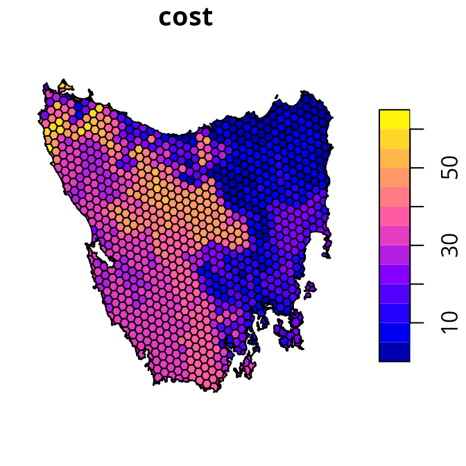
# plot map of planning unit statuses
plot(tas_pu[, "locked_in"])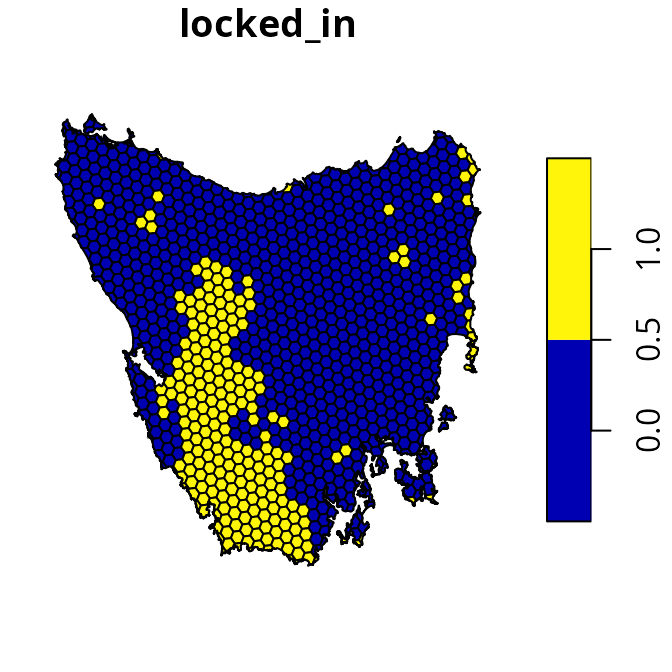
The tas_features object describes the spatial
distribution of various vegetation communities (using presence/absence
data). We will use these vegetation communities as the biodiversity
features for the prioritization.
# plot map of the first four vegetation classes
plot(tas_features[[1:4]])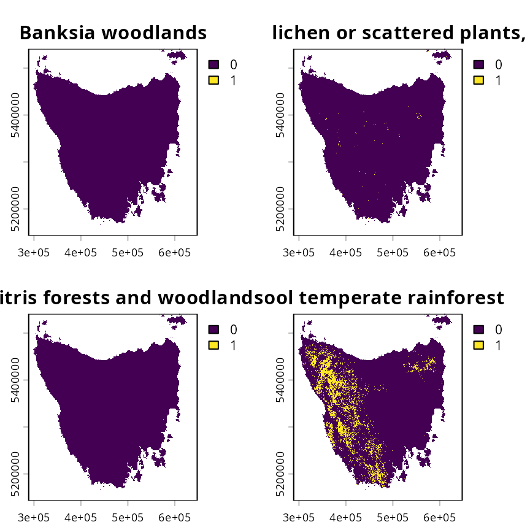
Preliminary processing
We will now prepare the data for subsequent analysis. This is
important to help make it easier to find suitable trade-off parameters,
and avoid numerical scaling issues that can result in overly long run
times (see presolve_check() for further information). These
processing steps are akin to data scaling (or normalization) procedures
that are applied in statistical analysis to improve model
convergence.
To begin with, we will set the cost values for all locked in planning units to zero. This is important so that the total cost of the prioritization reflects the total cost of new priority areas—-not total land value including existing protected areas. In other words, we want the total cost estimate for a prioritization to reflect the cost of establishing new protected areas. This procedure is especially important for the hierarchical approach (see below), so that its trade-off parameters reflect proportionate increases in the cost of establishing new protected areas.
# set costs for planning units covered by existing protected areas to zero
tas_pu$cost[tas_pu$locked_in > 0.5] <- 0
# plot map of planning unit costs
plot(tas_pu[, "cost"])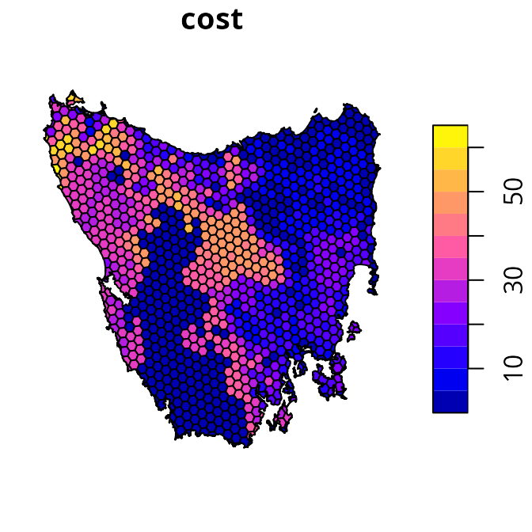
Next, we will pre-compute and maually re-scale the boundary length
data. This procedure is important because boundary length values are
often very high, which can cause numerical issues that result in
excessive run times (see presolve_check() for further
details).
# generate boundary length data for the planning units
tas_bd <- boundary_matrix(tas_pu)
# manually re-scale the boundary length values
tas_bd <- rescale_matrix(tas_bd)After completing these procedures, our data is ready for analysis.
Initial prioritization
We will generate an initial prioritization based on our primary objective (i.e., does not account for spatial fragmentation). Specifically, we will use the minimum set objective so that the optimization process minimizes total cost. We will add representation targets to ensure that prioritizations cover 17% of each vegetation community. Additionally, we will add constraints to ensure that planning units covered by existing protected areas are selected (i.e., locked in). Finally, we will specify that the conservation planning exercise involves binary decisions (i.e., selecting or not selecting planning units for protected area establishment).
# define a problem
p0 <-
problem(tas_pu, tas_features, cost_column = "cost") %>%
add_min_set_objective() %>%
add_relative_targets(0.17) %>%
add_locked_in_constraints("locked_in") %>%
add_binary_decisions()
# print problem
print(p0)## A conservation problem (<ConservationProblem>)
## ├•data
## │├•features: "Banksia woodlands", … (33 total)
## │└•planning units:
## │ ├•data: <sf> (1130 total)
## │ ├•costs: continuous values (between 0 and 61.92727)
## │ ├•extent: 298809.6, 5167775, 613818.8, 5502544 (xmin, ymin, xmax, ymax)
## │ └•CRS: WGS 84 / UTM zone 55S (projected)
## ├•formulation
## │├•objective: minimum set objective
## │├•penalties: none specified
## │├•features:
## ││├•targets: relative targets (all equal to 0.17)
## ││└•weights: none specified
## │├•constraints:
## ││└•1: locked in constraints (257 planning units)
## │└•decisions: binary decision
## └•optimization
## ├•portfolio: single portfolio
## └•solver: gurobi solver (`gap` = 0.1, `time_limit` = 2147483647, …)
## # ℹ Use `summary(...)` to see further details.
# solve problem
s0 <- solve(p0)
# print result
print(s0)## Simple feature collection with 1130 features and 5 fields
## Geometry type: MULTIPOLYGON
## Dimension: XY
## Bounding box: xmin: 298809.6 ymin: 5167775 xmax: 613818.8 ymax: 5502544
## Projected CRS: WGS 84 / UTM zone 55S
## # A tibble: 1,130 × 6
## id cost locked_in locked_out solution_1 geometry
## * <int> <dbl> <lgl> <lgl> <dbl> <MULTIPOLYGON [m]>
## 1 1 60.2 FALSE TRUE 0 (((328497 5497704, 326783.8 5500…
## 2 2 19.9 FALSE FALSE 0 (((307121.6 5490487, 305344.4 54…
## 3 3 59.7 FALSE TRUE 0 (((321726.1 5492382, 320111 5494…
## 4 4 32.4 FALSE FALSE 0 (((304314.5 5494324, 304342.2 54…
## 5 5 26.2 FALSE FALSE 0 (((314958.5 5487057, 312336 5490…
## 6 6 51.3 FALSE FALSE 0 (((327904.3 5491218, 326594.6 54…
## 7 7 32.3 FALSE FALSE 0 (((308194.1 5481729, 306601.2 54…
## 8 8 38.4 FALSE FALSE 0 (((322792.7 5483624, 319965.3 54…
## 9 9 3.55 FALSE FALSE 0 (((334896.6 5490731, 335610.4 54…
## 10 10 1.83 FALSE FALSE 0 (((356377.1 5487952, 353903.1 54…
## # ℹ 1,120 more rows
# create column for making a map of the prioritization
s0$map_1 <- case_when(
s0$locked_in > 0.5 ~ "locked in",
s0$solution_1 > 0.5 ~ "priority",
TRUE ~ "other"
)
# plot map of prioritization
plot(
s0[, "map_1"], pal = c("purple", "grey90", "darkgreen"),
main = NULL, key.pos = 1
)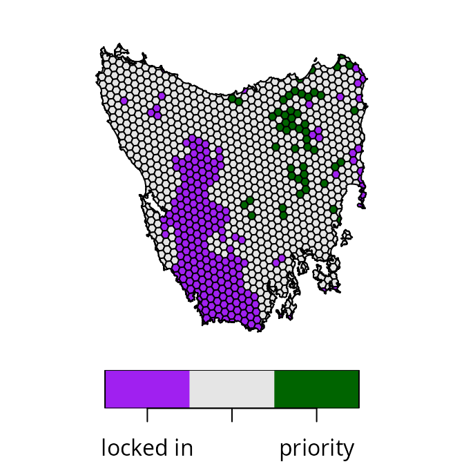
We can see that the priority areas identified by the prioritization are scattered across the study area (shown in green). Indeed, relatively few priority areas are connected to existing protected areas (shown in purple) or other priority areas (shown in green). As such, the prioritization has a high level of spatial fragmentation. If it is important to avoid such levels of spatial fragmentation, then we will need to explicitly account for spatial fragmentation in the optimization process.
Generating candidate prioritizations
Here we will start the calibration analysis by generating a set of candidate prioritizations. In particular, we will examine multiple different approaches for generating candidate prioritizations. Some of these approaches will involve generating multiple different prioritizations based on different trade-off parameters, and other approaches will involve generating a single prioritization that tries to automatically resolve trade-offs. Since this tutorial involves navigating trade-offs between the overall cost of a prioritization and the level of spatial fragmentation associated with a prioritization (as measured by total boundary length), we will generate prioritizations using different parameters related to these objectives. Although we’ll be examining multiple approaches in this tutorial, you would normally only use one of these approaches when conducting your own analysis
Weighted sum approach
The weighted sum approach for multi-objective optimization involves
combining separate objectives (e.g., total cost and total boundary
length) into a single joint objective. To achieve this, a trade-off
parameter is used to specify the relative importance of each criterion.
Although older versions of the prioritizr R package required
building multiple problems (separately) that each had their own
trade-off parameter (i.e., via the penalty parameter for
add_boundary_penalties()), it is now possible to
automatically generate multiple prioritizations based on multiple
different trade-off parameters by explicitly formulating a
multi-objective optimization problem. As such, we will build a
multi-objective problem (via multi_problem()) and use the
weighted sum approach (via add_wtd_sum_approach()) with
weights values to indicate trade-offs.
The main challenge with the weighted sum approach is identifying a
range of suitable weights (or penalty) values
to generate candidate prioritizations. If we set a weights
value for the boundary penalties that are too low, then the penalties
will have no effect (e.g., boundary length penalties would have no
effect on the prioritization). Conversely, if we set a
weights value that is too high, then the prioritization
will effectively ignore the primary objective. In such cases, the
prioritization will be overly spatially clustered – because the planning
unit cost values have no effect – and contain a single reserve. Thus we
need to find a suitable range of weights values before we
can generate a set of candidate prioritizations.
We can find a suitable range of weights values for the
boundary penalties by generating a set of preliminary prioritizations.
These preliminary prioritizations will be based on different
weights values – similar to the process for generating the
candidate prioritizations – but solved using customized settings that
sacrifice optimality for fast run times (see below for details). This is
especially important because specifying a weights value
that is too high will cause the optimization process to take a very long
time to generate a solutions (due to the numerical scaling issues
mentioned previously). To find a suitable range of weights
values, we need to identify an upper limit for the weights
value (i.e., the highest weights value that result in a
prioritization containing a single reserve). Let’s create some
preliminary weights to identify this upper limit.
Please note that you might need to adjust the
prelim_upper value to find the upper limit when analyzing
different datasets.
# define a range of different weight values for the boundary penalties
## note that we use a power scale to avoid focusing too much on high weights
prelim_lower <- -1 # change this for your own data
prelim_upper <- 5 # change this for your own data
# create a matrix of weights
## the first column has weights fixed at 1 for the primary objective
## the second column has varying weights for the boundary penalties
prelim_weights <- matrix(
c(
rep(1, 9),
round(10^seq(prelim_lower, prelim_upper, length.out = 9), 5)
),
ncol = 2
)
# assign row names for preliminary weights
rownames(prelim_weights) <-
with_options(list(scipen = 30), paste0("weight_", prelim_weights[, 2]))
# print weight values
print(prelim_weights)## [,1] [,2]
## weight_0.1 1 0.10000
## weight_0.56234 1 0.56234
## weight_3.16228 1 3.16228
## weight_17.78279 1 17.78279
## weight_100 1 100.00000
## weight_562.34133 1 562.34133
## weight_3162.27766 1 3162.27766
## weight_17782.7941 1 17782.79410
## weight_100000 1 100000.00000Next, let’s use the preliminary weights values to
generate preliminary prioritizations. As mentioned earlier, we will
generate these preliminary prioritizations using customized settings to
reduce runtime. Specifically, we will set a time limit of 10 minutes per
run, and relax the optimality gap to 20%. Although we would not normally
use such settings – because the resulting prioritizations are not
guaranteed to be near-optimal (the default gap is 10%) – this is fine
here because our goal is to tune the preliminary weights
values. Indeed, none of these preliminary prioritizations will be
considered as candidate prioritizations. Please note that you
might need to set a higher time limit, or relax the optimality gap even
further (e.g., 40%) when analyzing larger datasets.
# define a multi-objective optimization problem
p1 <-
multi_problem(
## primj
cost_obj =
problem(tas_pu, tas_features, cost_column = "cost") %>%
add_min_set_objective() %>%
add_relative_targets(0.17) %>%
add_locked_in_constraints("locked_in") %>%
add_binary_decisions(),
boundary_obj =
problem(tas_pu, tas_features, cost_column = "cost") %>%
add_min_penalties_objective() %>%
# note that we use penalty = 1 here so that trade-offs will
# subsequently be specified by prelim_weights
add_boundary_penalties(penalty = 1, data = tas_bd) %>%
add_binary_decisions()
)
# generate preliminary prioritizations based on each weight
## note that we specify a relaxed gap and time limit for the solver
prelim_wtd_sum_results <-
p1 %>%
add_wtd_sum_approach(weights = prelim_weights) %>%
add_default_solver(gap = 0.2, time_limit = 10 * 60) %>%
solve()
# rename solution columns
names(prelim_wtd_sum_results) <- str_replace_all(
names(prelim_wtd_sum_results),
setNames(
rownames(prelim_weights),
paste0("solution_", seq_len(nrow(prelim_weights)))
)
)
# preview results
print(prelim_wtd_sum_results)After generating the preliminary prioritizations, let’s create some maps to visualize them. In particular, we want to understand how different weight values influence the spatial fragmentation of the prioritizations.
# plot maps of prioritizations
plot(
x =
prelim_wtd_sum_results %>%
dplyr::select(starts_with("weight_")) %>%
mutate_if(is.numeric, function(x) {
case_when(
prelim_wtd_sum_results$locked_in > 0.5 ~ "locked in",
x > 0.5 ~ "priority",
TRUE ~ "other"
)
}),
pal = c("purple", "grey90", "darkgreen")
)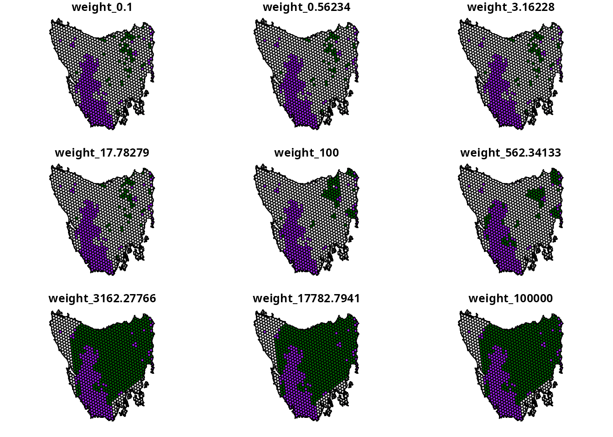
We can see that as the weights value used to generate
the prioritizations increases, the spatial fragmentation of the
prioritizations decreases. In particular, we can see that a
weights value of 3162.27766 results in a single reserve –
meaning this is our best guess of the upper limit. Using this
weights value as an upper limit, we will now generate a
second series of prioritizations that will be the candidate
prioritizations. Critically, these candidate prioritizations will not be
generated using with time limit and be generated using a more suitable
gap (i.e., default gap of 10%).
# define best guess for upper weight limit
upper_weight_limit <- 3162.27766
# define a new set of weights values
weights <- matrix(
c(
rep(1, 9),
round(seq(10^prelim_lower, upper_weight_limit, length.out = 9), 5)
),
ncol = 2
)
# assign row names for weights
rownames(weights) <-
with_options(list(scipen = 30), paste0("weight_", weights[, 2]))
# generate prioritizations based on weight sum approach
wtd_sum_results <-
p1 %>%
add_wtd_sum_approach(weights = weights) %>%
solve()
# rename columns with prioritizations so they have weight values
names(wtd_sum_results) <- str_replace_all(
names(wtd_sum_results),
setNames(
rownames(weights),
paste0("solution_", seq_len(nrow(weights)))
)
)
# plot maps of prioritizations
plot(
x =
wtd_sum_results %>%
dplyr::select(starts_with("weight_")) %>%
mutate_if(is.numeric, function(x) {
case_when(
wtd_sum_results$locked_in > 0.5 ~ "locked in",
x > 0.5 ~ "priority",
TRUE ~ "other"
)
}),
pal = c("purple", "grey90", "darkgreen")
)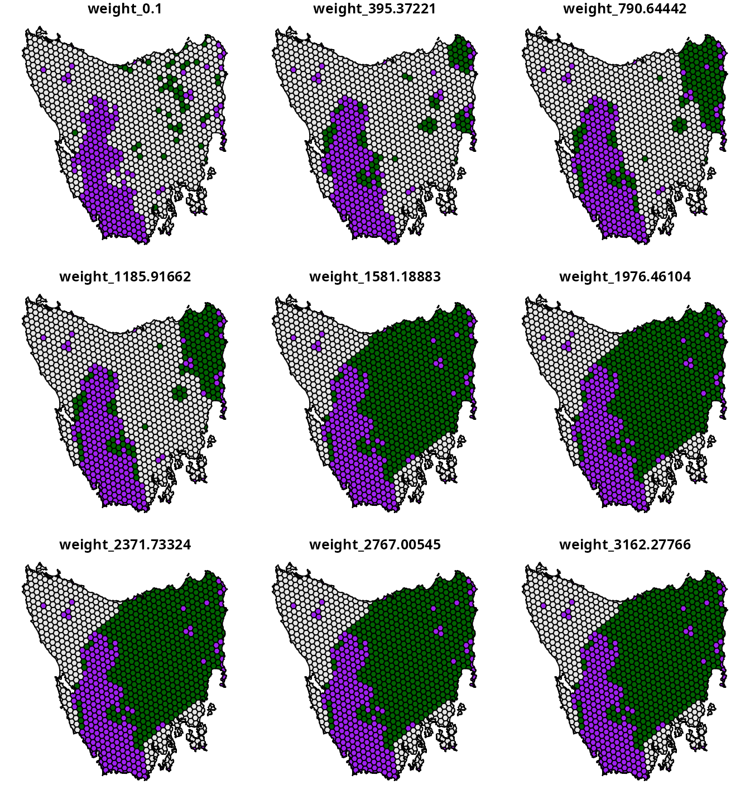
We now have a set of candidate prioritizations generated using the
weighted sum approach. The main advantages of this approach is that it
is similar calibration analyses used by other decision support tools for
conservation and it is relatively straightforward to implement (Ardron et al. 2010). However, this
approach also has a key disadvantage. Because the weights
parameter is a unitless trade-off parameter – meaning that we can’t
leverage existing knowledge to specify a suitable range of
weights values – we first have to conduct a preliminary
analysis to identify a suitable upper limit. Although finding an upper
limit was fairly simple for the example dataset, it can be difficult to
find for more realistic datasets with more planning units and features.
In the next section, we will show how to generate a set of candidate
prioritizations using the hierarchical approach – which does not have
this disadvantage.
Hierarchical approach
The hierarchical approach for multi-objective optimization involves generating a series of incremental prioritizations – using a different objective at each increment to refine the previous solution – until the final solution achieves all of the objectives. The advantage with this approach is that we can specify trade-off parameters for each objective based on a percentage from optimality. This means that we can leverage our own knowledge – or that of decision maker – to generate a range of suitable trade-off parameters. As such, this approach – unlike the weighted sum approach – does not require us to generate a series of preliminary prioritizations.
This approach uses a relative tolerance (rel_tol)
parameter to specify trade-offs. The rel_tol parameter
specifies the relative degree – expressed as a proportion – to which we
are willing to sacrifice higher priority objectives to better optimize
lower priority objectives. As mentioned earlier, the total cost of the
prioritization is the primary objective and spatial fragmentation is a
supplemental objective—thus the total cost of the prioritization has a
higher priority than spatial fragmentation. For example, a value of 0.05
means that we would be willing to sacrifice a 5% reduction in quality
for the highest priority objective to better optimize low priority
objectives. Since these values are expressed as proportions – and not
unitless values as per the weighted sum approach – we can use domain
knowledge to specify a suitable range of rel_tol values.
For this tutorial, let’s assume that it would be impractical – per our
domain knowledge – to expend more than four times the total cost of the
initial prioritization to reduce spatial fragmentation.
# define relative tolerance values
rel_tol <- matrix(seq(0, 4, length.out = 9))
# assign row names for relative tolerance values
rownames(rel_tol) <-
with_options(list(scipen = 30), paste0("rel_tol_", rel_tol[, 1]))
# print relative tolerance values
print(rel_tol)
# generate prioritizations based on hierarchical approach
hierarchical_results <-
p1 %>%
# by default, objectives are assumed to be in order of priority
# (but this can be altered with the priority parameter)
add_hier_approach(rel_tol = rel_tol) %>%
solve()
# rename columns with prioritizations so they have rel_tol values
names(hierarchical_results) <- str_replace_all(
names(hierarchical_results),
setNames(
rownames(rel_tol),
paste0("solution_", seq_len(nrow(rel_tol)))
)
)
# plot maps of prioritizations
plot(
x =
hierarchical_results %>%
dplyr::select(starts_with("rel_tol_")) %>%
mutate_if(is.numeric, function(x) {
case_when(
hierarchical_results$locked_in > 0.5 ~ "locked in",
x > 0.5 ~ "priority",
TRUE ~ "other"
)
}),
pal = c("purple", "grey90", "darkgreen")
)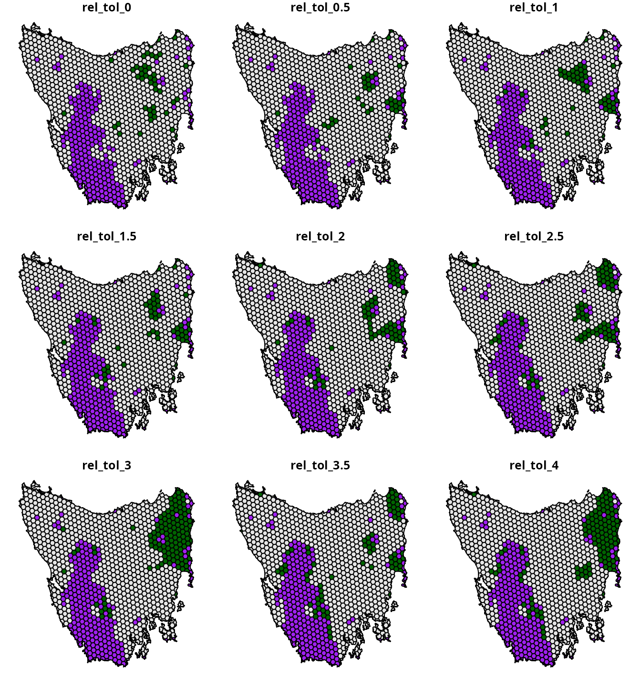
Cohon et al. (1979) approach
The Cohon et al. (1979) approach aims to automatically balance trade-offs between two objectives (Fischer & Church 2005). Specifically, it involves generating two optimal prioritizations – with each prioritization representing the optimal prioritization according to each criteria (e.g., total cost versus total boundary length) – and then using performance metrics for these prioritizations to automatically derive a trade-off parameter value (Ardron et al. 2010; Cohon et al. 1979). Thus, unlike the two previous approaches, this approach can be used to automatically generate a single prioritization that balances trade-offs. As such, this approach can potentially be used to find a prioritization that represents a desirable compromise in a much shorter period of time than the previous approach.
# create problem with boundary penalties
## note that penalty = 1 is used as a place-holder
p2 <-
problem(tas_pu, tas_features, cost_column = "cost") %>%
add_min_set_objective() %>%
add_boundary_penalties(penalty = 1, data = tas_bd) %>%
add_relative_targets(0.17) %>%
add_locked_in_constraints("locked_in") %>%
add_binary_decisions()
# find calibrated boundary penalty using Cohon's approach
cohon_penalty <- calibrate_cohon_penalty(p2, verbose = FALSE)
# print penalty value
print(cohon_penalty[[1]])## [1] 551.3914Now that we have calculated a penalty value using this
approach, we can use it to generate a prioritization.
# generate prioritization using penalty value calculated using Cohon's approach
p3 <-
problem(tas_pu, tas_features, cost_column = "cost") %>%
add_min_set_objective() %>%
add_boundary_penalties(penalty = cohon_penalty, data = tas_bd) %>%
add_relative_targets(0.17) %>%
add_locked_in_constraints("locked_in") %>%
add_binary_decisions()
# solve problem
s3 <- solve(p3)
# plot map of prioritization
plot(
x =
s3 %>%
mutate(
value = case_when(
locked_in > 0.5 ~ "locked in",
solution_1 > 0.5 ~ "priority",
TRUE ~ "other"
)
) %>%
dplyr::select(value),
pal = c("purple", "grey90", "darkgreen"),
main = NULL, key.pos = 1
)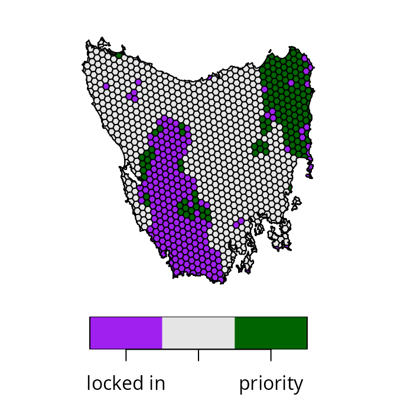
Reference point approach
The reference point approach (Wierzbicki
1980) is another multi-objective optimization approach that can
be used to balance trade-offs. Although it has a weights
parameter that can be used to specify trade-offs among objectives
(similar to the weighted sum approach), this approach can also be used
to automatically identify a prioritization that equally balances how
well each objective is achieved. This is because – similar to the Cohon
et al. (1979) approach – the
reference point approach considers the best and worst possible
performance that could be achieved for each objective. Now let’s use the
reference point approach to generate a prioritization.
# generate prioritization based on reference point approach
s4 <-
p1 %>%
add_ref_point_approach() %>%
solve()
# plot map of prioritization
plot(
x =
s4 %>%
mutate(
value = case_when(
locked_in > 0.5 ~ "locked in",
solution_1 > 0.5 ~ "priority",
TRUE ~ "other"
)
) %>%
dplyr::select(value),
pal = c("purple", "grey90", "darkgreen"),
main = NULL, key.pos = 1
)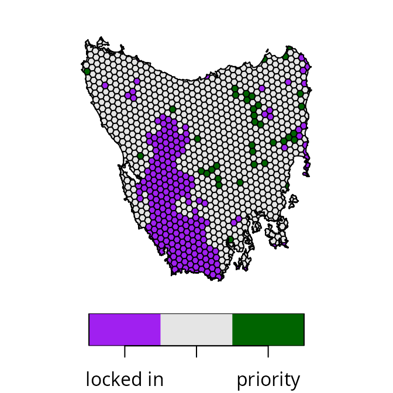
After completing this, let’s compare the prioritizations to see if we can identify a desirable compromise between the objectives.
Calculating performance metrics
Here we will calculate performance metrics to compare the
prioritizations. To help organize all the prioritizations generated by
the different approaches, we will first create a solutions
object to store them in. Next, since our aim is to navigate trade-offs
between the total cost of a prioritization and the overall level of
spatial fragmentation associated with a prioritization (as measured by
total boundary length), we will calculate metrics to assess these
objectives.
# create object with all prioritizations
solutions <-
sf::st_sf(geometry = sf::st_geometry(tas_pu)) %>%
bind_cols(
hierarchical_results %>%
dplyr::select(starts_with("rel_tol")) %>%
st_drop_geometry(),
wtd_sum_results %>%
dplyr::select(starts_with("weight")) %>%
st_drop_geometry(),
s3 %>%
dplyr::select(solution_1) %>%
rename(Cohon = solution_1) %>%
st_drop_geometry(),
s4 %>%
dplyr::select(solution_1) %>%
rename(`reference point` = solution_1) %>%
st_drop_geometry()
)
# calculate metrics for prioritizations
metric_data <-
lapply(
names(st_drop_geometry(solutions)), function(x) {
data.frame(
name = x,
total_cost =
eval_cost_summary(p0, solutions[, x])$cost,
total_boundary_length =
eval_boundary_summary(p0, solutions[, x])$boundary
)
}
) %>%
bind_rows() %>%
as_tibble() %>%
mutate(
approach = case_when(
startsWith(name, "rel_tol") ~ "hierarchical",
startsWith(name, "weight") ~ "weighted sum",
startsWith(name, "Cohon") ~ "Cohon",
startsWith(name, "reference point") ~ "reference point"
)
) %>%
mutate(
label = case_when(
approach == "hierarchical" ~
gsub("rel_tol_", "rel_tol = ", name, fixed = TRUE),
approach == "weighted sum" ~
gsub("weight_", "weight = ", name, fixed = TRUE),
TRUE ~ name
)
)
# preview metrics
print(metric_data)## # A tibble: 20 × 5
## name total_cost total_boundary_length approach label
## <chr> <dbl> <dbl> <chr> <chr>
## 1 rel_tol_0 377. 2636025. hierarchical rel_tol =…
## 2 rel_tol_0.5 564. 2241411. hierarchical rel_tol =…
## 3 rel_tol_1 757. 2136875. hierarchical rel_tol =…
## 4 rel_tol_1.5 930. 2084474. hierarchical rel_tol =…
## 5 rel_tol_2 1141. 2013689. hierarchical rel_tol =…
## 6 rel_tol_2.5 1323. 1961490. hierarchical rel_tol =…
## 7 rel_tol_3 1518. 1858158. hierarchical rel_tol =…
## 8 rel_tol_3.5 1680. 1899301. hierarchical rel_tol =…
## 9 rel_tol_4 1867. 1834144. hierarchical rel_tol =…
## 10 weight_0.1 372. 2802603. weighted sum weight = …
## 11 weight_395.37221 1794. 1769184. weighted sum weight = …
## 12 weight_790.64442 2364. 1655994. weighted sum weight = …
## 13 weight_1185.91662 2392. 1645271. weighted sum weight = …
## 14 weight_1581.18883 9738. 1289465. weighted sum weight = …
## 15 weight_1976.46104 9738. 1289465. weighted sum weight = …
## 16 weight_2371.73324 9738. 1289465. weighted sum weight = …
## 17 weight_2767.00545 9772. 1288656. weighted sum weight = …
## 18 weight_3162.27766 9772. 1288656. weighted sum weight = …
## 19 Cohon 2040. 1673569. Cohon Cohon
## 20 reference point 463. 2284516. reference point reference…After calculating the metrics, we can use them to visualize trade-offs among the prioritizations.
# create plot to visualize trade-offs among prioritizations
result_plot <-
ggplot(
data = metric_data,
aes(x = total_boundary_length, y = total_cost, label = label)
) +
geom_point(aes(color = approach), size = 3) +
geom_label_repel(
seed = 500,
nudge_x = 5.5,
nudge_y = 5.5,
force = 10,
max.overlaps = Inf
) +
scale_color_manual(
name = "Approach",
values = c(
"hierarchical" = "#984ea3",
"weighted sum" = "#000000",
"Cohon" = "#377eb8",
"reference point" = "#ff7f00"
)
) +
xlab("Total boundary length of prioritization") +
ylab("Total cost of prioritization") +
scale_x_continuous(expand = expansion(mult = c(0.2, 0.3))) +
scale_y_continuous(expand = expansion(mult = c(0.3, 0.2))) +
theme(
legend.position = c(0.95, 0.95),
legend.justification = c(1, 1)
)
# render plot
print(result_plot)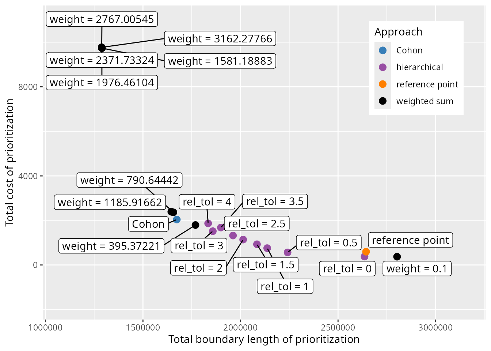
Selecting a prioritization
Now we need to decide which prioritization represents a desirable compromise between the objectives. Since weighted sum and hierarchical approaches involve generating a set of candidate prioritizations, we will begin by selecting a single prioritization from these prioritizations to help narrow down our set of choices. To achieve this, we will employ one qualitative method and one quantitative method. Although these methods could be applied to prioritizations generated with the weighted sum as well as the hierarchical approaches, here we will just consider those generated with the hierarchical approach for brevity.
Visual method
One qualitative method involves plotting the relationship between the different criteria, and using the plot to visually select a candidate prioritization. This visual method is often used to help calibrate trade-offs among prioritizations generated using the Marxan decision support tool (e.g., Hermoso et al. 2011; Stewart & Possingham 2005). In particular, we will apply the visual method to select a prioritization from the set of prioritizations generated by the hierarchical approach. So, let’s create a plot to select a prioritization.
# create plot to visualize trade-offs and show selected candidate prioritization
result_plot <-
ggplot(
data = metric_data %>% filter(approach == "hierarchical"),
aes(x = total_boundary_length, y = total_cost, label = label)
) +
geom_line() +
geom_point(size = 3) +
geom_label_repel(
seed = 500,
nudge_x = 5.5,
nudge_y = 5.5,
force = 10,
max.overlaps = Inf
) +
xlab("Total boundary length of prioritization") +
ylab("Total cost of prioritization") +
theme(
legend.position = c(0.95, 0.95),
legend.justification = c(1, 1)
)
# render plot
print(result_plot)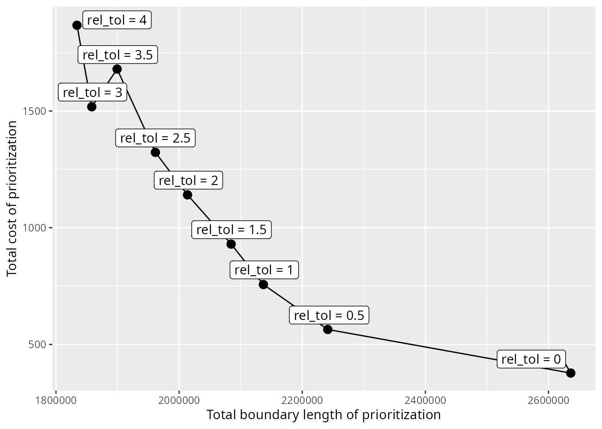
We can see that there is a clear relationship between total cost and
total boundary length. It would seem that in order to achieve a lower
total boundary length – and thus lower spatial fragmentation – the
prioritization must have a greater cost. Although we might expect the
results to show a smoother curve – in other words, only Pareto dominant
solutions – this result is expected because we generated candidate
prioritizations using the default optimality gap of 10%. Typically, the
visual method involves selecting a prioritization near the elbow (or
knee) of the plot. So, let’s select the prioritization generated using a
rel_tol value of 1. To keep track of the prioritizations
selected based on different methods, let’s create a method
column in the metric_data table.
# initialize method column
metric_data <-
metric_data %>%
mutate(method = "none") %>%
mutate(
method = if_else(
approach %in% c("Cohon", "reference point"),
approach,
method
)
)
# specify prioritization selected by visual method
metric_data <-
metric_data %>%
mutate(
method = if_else(
name == rownames(rel_tol)[[3]],
"visual",
method
)
)Next, let’s consider a quantitative approach.
TOPSIS method
Multiple-criteria decision analysis is a discipline that uses analytical methods to evaluate trade-offs between multiple objectives [MCDA; reviewed in Greene et al. (2011)]. Although this discipline contains many different methods, here we will use the the Technique for Order of Preference by Similarity to Ideal Solution (TOPSIS) method (Hwang & Yoon 1981). This method requires (i) data describing the performance of each prioritization according to each objective, (ii) weights to encode the relative importance of each objective, and (iii) details on whether each objective should ideally be minimized or maximized. Let’s run the analysis – assuming that we want equal weighting for total cost and total boundary length – to identify a candidate prioritization from those generated with the hierarchical approach.
# calculate TOPSIS scores
topsis_results <- topsis(
decision =
metric_data %>%
filter(approach == "hierarchical") %>%
dplyr::select(total_cost, total_boundary_length) %>%
as.matrix(),
weights = c(1, 1),
impacts = c("-", "-")
)
# print results
print(topsis_results)## alt.row score rank
## 1 1 0.7595566 2
## 2 2 0.8133448 1
## 3 3 0.7327770 3
## 4 4 0.6343975 4
## 5 5 0.5135217 5
## 6 6 0.4153342 6
## 7 7 0.3352942 7
## 8 8 0.2659945 8
## 9 9 0.2404434 9The candidate prioritization with the greatest TOPSIS score is
considered to represent the best trade-off between total cost and total
boundary length. So, based on this method, we would select the
prioritization generated using a rel_tol value of 0.5.
Let’s update the metric_data with this information.
Method comparison
Let’s create a plot to visualize the prioritizations selected by the different approaches and methods.
# create plot to visualize trade-offs and show selected prioritizations
result_plot <-
ggplot(
data = metric_data,
aes(x = total_boundary_length, y = total_cost, label = label)
) +
geom_point(aes(color = method), size = 3) +
geom_label_repel(
seed = 500,
nudge_x = 5.5,
nudge_y = 5.5,
force = 10,
max.overlaps = Inf
) +
scale_color_manual(
name = "Method",
values = c(
"visual" = "#984ea3",
"none" = "#000000",
"TOPSIS" = "#e41a1c",
"Cohon" = "#377eb8",
"reference point" = "#ff7f00"
)
) +
xlab("Total boundary length of prioritization") +
ylab("Total cost of prioritization") +
scale_x_continuous(expand = expansion(mult = c(0.2, 0.3))) +
scale_y_continuous(expand = expansion(mult = c(0.3, 0.2))) +
theme(
legend.position = c(0.95, 0.95),
legend.justification = c(1, 1)
)
# render plot
print(result_plot)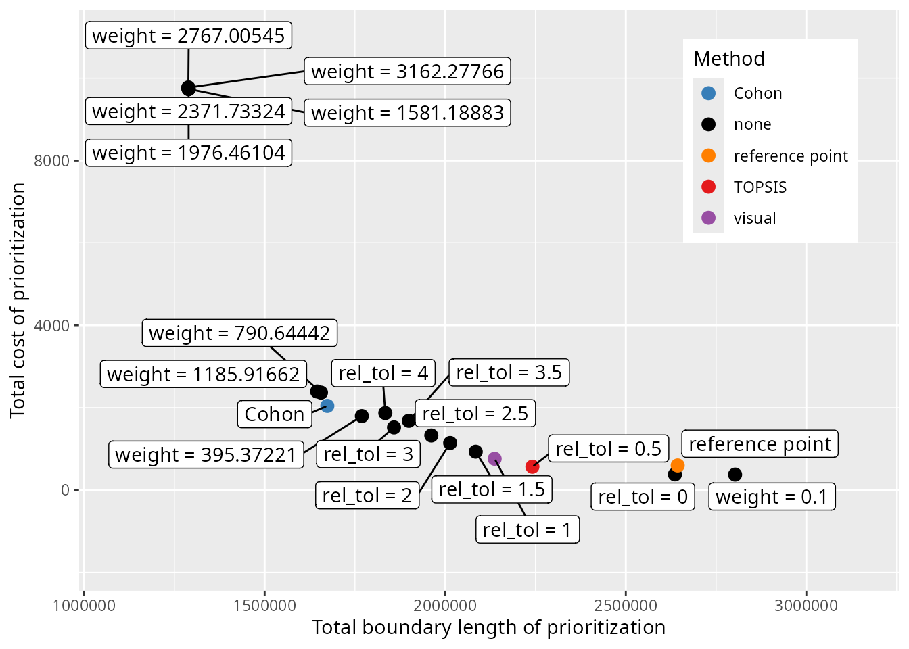
We can see that the different methods selected different prioritizations. To further compare the results from the different methods, let’s create some maps showing the selected prioritizations.
# extract column names for creating the prioritizations
solutions$Visual <-
solutions[[metric_data$name[metric_data$method == "visual"]]]
solutions$TOPSIS <-
solutions[[metric_data$name[metric_data$method == "TOPSIS"]]]
# plot maps of selected prioritizations
plot(
x =
solutions %>%
dplyr::select(Visual, TOPSIS, Cohon, `reference point`) %>%
mutate_if(is.numeric, function(x) {
case_when(
tas_pu$locked_in > 0.5 ~ "locked in",
x > 0.5 ~ "priority",
TRUE ~ "other"
)
}),
pal = c("purple", "grey90", "darkgreen")
)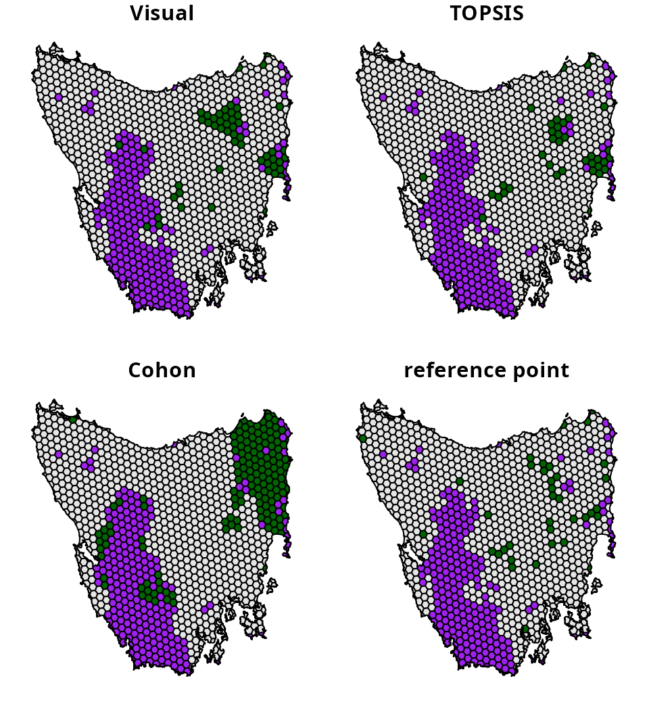
How do we determine which one is best? This is difficult to say. Ideally, expert knowledge could be used to help select a prioritization, such as knowledge on available resources, species’ connectivity requirements, and management feasibility. However, from a practical perspective, prioritizations generated for academic contexts might find the quantitative approaches more useful because they have greater transparency and reproducibility. Ultimately, all of these methods are designed to support decision making. This means that they are intended to assist the decision making process, not serve as a replacement.
Conclusion
Hopefully, this vignette has provided a useful introduction for
resolving trade-offs in prioritizations. Although we only explored
trade-offs between total cost and spatial fragmentation in this
tutorial, this analysis could be adapted to explore trade-offs between a
wide range of different criteria. For instance, instead of considering
total cost as the primary objective, future analyses could explore
trade-offs with feature representation (using the
add_min_shortfall_objective() function). Additionally,
instead of spatial fragmentation, future analyses could explore
trade-offs that directly relate to connectivity (using the
add_connectivity_penalties() function) or specific
variables of interest – such as ecosystem intactness or inverse human
footprint index (Williams et al. 2020;
Beyer et al. 2019) – to inform decision making (using
the add_linear_penalties() function). Furthermore, after
identifying the best weights or rel_tol values
to strike a balance between multiple criteria, you could generate a
portfolio of prioritizations (e.g., via
add_gap_portfolio()) to find multiple options for achieving
a similar balance. This might be helpful when you need to generate a set
of prioritizations that have comparable performance – in terms of how
well they achieve different criteria – but select different planning
units.